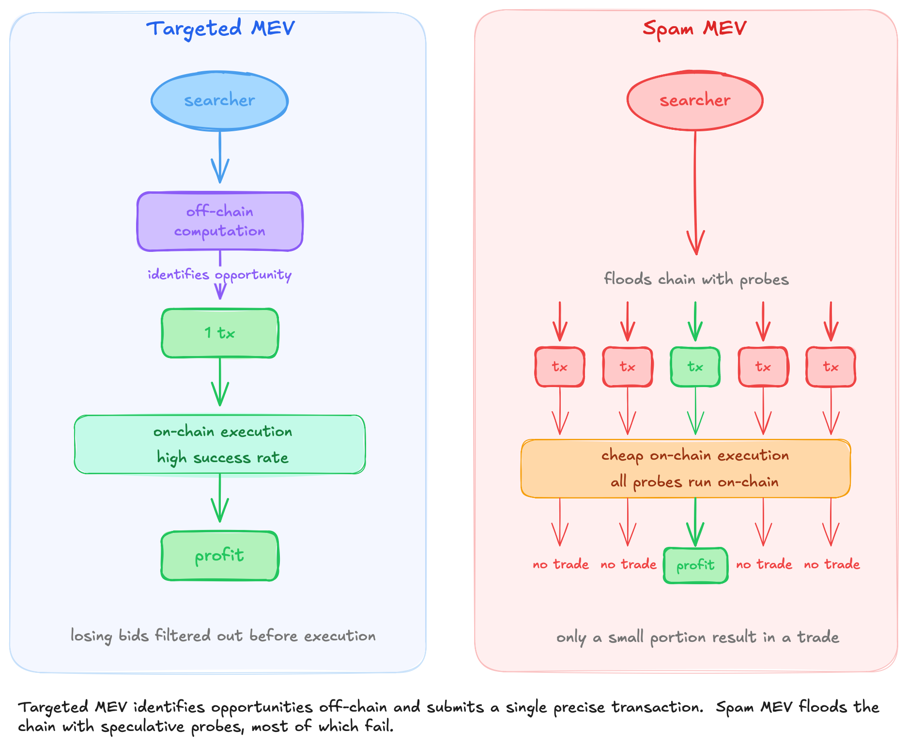
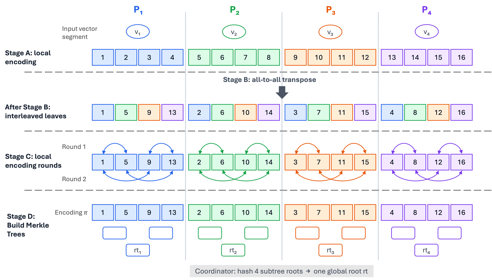
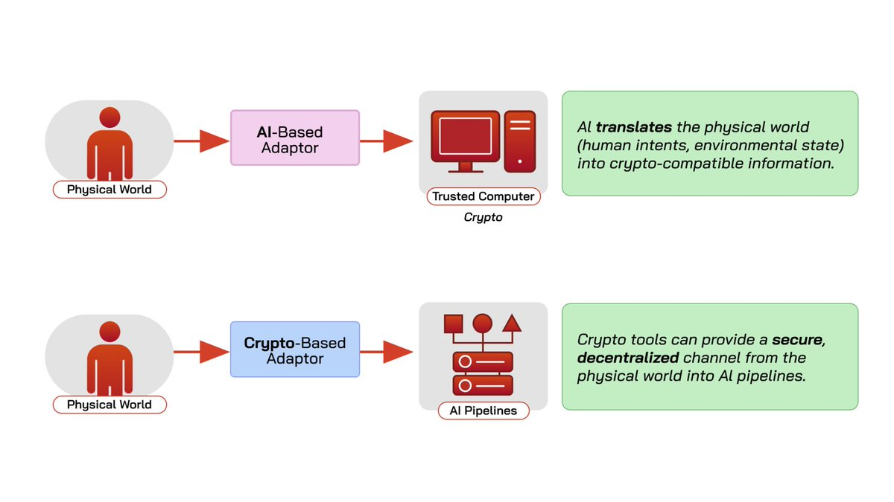
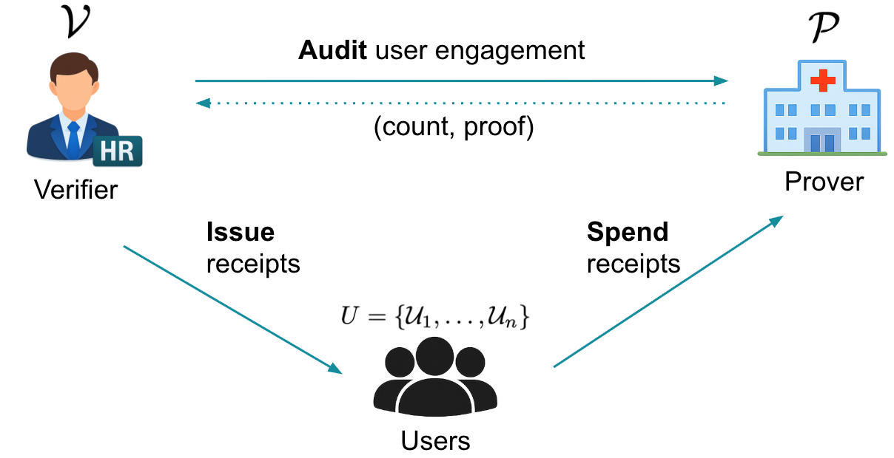
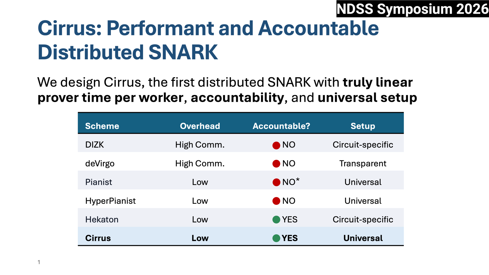
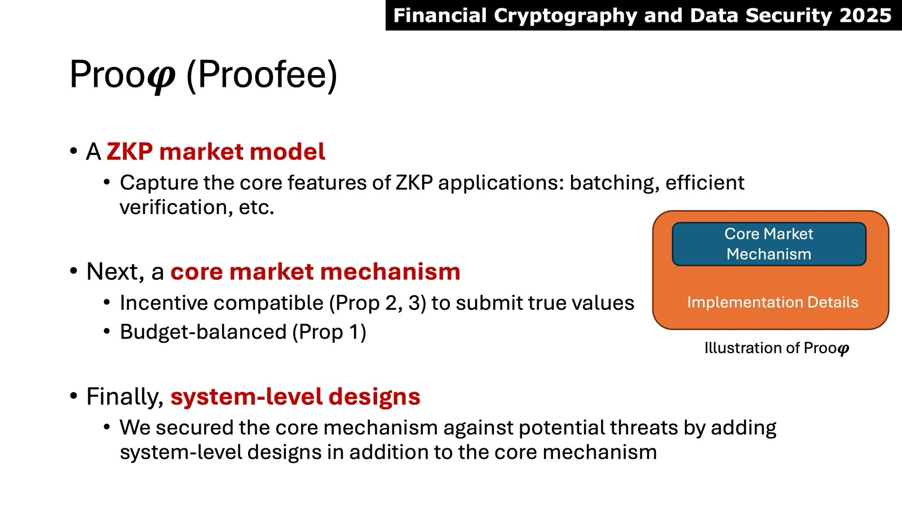
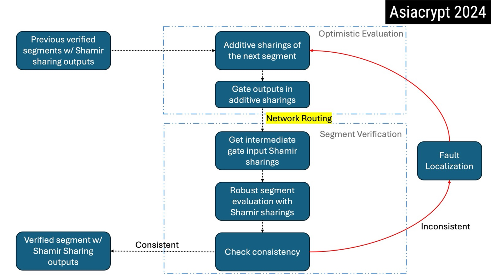

|
Publications |

Currently in submission.

Currently in submission.


Currently in submission.

In NDSS Symposium 2026, San Diego, CA, USA.


In Asiacrypt 2024.
Selected TalksBlockspace Under Pressure: An Analysis of Spam MEV on High-Throughput Blockchains
|
Blogs
Essay
March 16, 2026
Frontier AI Is Already Changing Security and Systems ResearchAI first felt useful to me as a writing assistant. Over the last two years, that changed: it started helping with proof ideas, pseudocode-to-code translation, implementation audits, and research iteration itself. |
Awards & Grants
Nathan Hale Associates Fellowship
Yale University • 2025
ZK Grant
Ethereum Foundation • 2024 For "Cirrus: Performant and Robust Distributed SNARK Generation via Computation Delegation" |
Professional Services
Reviewer
Program Committee Member
|
Experience
Summer Research Intern
Category Labs, Inc. May 2025 - Aug. 2025 |
TeachingTeaching Assistant, CPSC 466/566: Web3, Blockchains, and Cryptocurrencies, Yale University • Spring 2026 Teaching Assistant, CPSC 441/541: Verifiable, Private, Decentralized Computing in the Age of AI, Yale University • Fall 2025 Teaching Assistant, CPSC 466/566: Web3, Blockchains, and Cryptocurrencies, Yale University • Spring 2025 |
{kind=link}